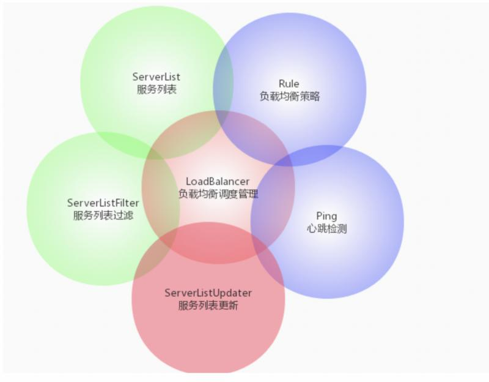

原文连接:https://www.cnblogs.com/zhixiang-org-cn/p/11769320.html

在学习Ribbon之前，先看一下这张图，这张图完美的把Ribbon的基础架构给描述出来了
这张图的核心是负载均衡管理器，围绕着它的是外面的这5大功能点，咱们就从核心开始看然后再带出来其他的功能
首先看一下负载均衡器的核心接口ILoadBalancer
public interface ILoadBalancer {
public void addServers(List<Server> newServers);
public Server chooseServer(Object key);
public void markServerDown(Server server);
public List<Server> getReachableServers();
public List<Server> getAllServers();
}这个接口中保护了一个基本的负载均衡器所必须的所有功能：
addServers(List)向负载均衡器中添加服务实例chooseServer(Object)根据负载均衡策略，从负载均衡器中挑选出一个服务实例markServerDown(Server)下线负载均衡器中的某个具体实例getReachableServers()返回当前可正常服务的实例列表getAllServers()返回所有的服务实例列表
接着来看一下这个接口的UML图

首先看AbstractLoadBalancer这个类，这个类是ILoadBalancer接口的抽象类实现。
在这个抽象类中定义了一个表示服务实例状态的枚举的同时还新增了两个抽象方法：
public enum ServerGroup{
ALL,
STATUS_UP,
STATUS_NOT_UP
}
public abstract List<Server> getServerList(ServerGroup serverGroup);
public abstract LoadBalancerStats getLoadBalancerStats();getServerList(ServerGroup):根据分组类型来返回不同的服务实例列表。getLoadBalancerStats():返回LoadBalancerStatus对象，这个LoadBalancerStats对象是用来存储负载均衡器中各个服务实例当前的属性和统计信息的
AbstractLoadBalancer共有两个实现类，右侧的NoOpLoadBalancer是一个空的实现类，这里可以忽略不计。这里接着继续看BaseLoadBalancer
BaseLoadBalancer是负载均衡器的基础实现类，这个类对于接口ILoadBalancer的所有方法都给予了基础的实现，除此之外还保护了很多重要的对象
两个存储当前服务实例对象的列表，一个是包含所有服务、一个是包含正常服务
@Monitor(name = PREFIX + "AllServerList", type = DataSourceType.INFORMATIONAL)
protected volatile List<Server> allServerList = Collections
.synchronizedList(new ArrayList<Server>());
@Monitor(name = PREFIX + "UpServerList", type = DataSourceType.INFORMATIONAL)
protected volatile List<Server> upServerList = Collections
.synchronizedList(new ArrayList<Server>());存储负载系统器各服务实例属性和统计信息的对象
protected LoadBalancerStats lbStats;
心跳检测对象
protected IPing ping = null;
IPing是用来向服务发起心跳检测的，通过心跳检测来判断该服务是否可用。IPing的实现类有以下几种：
PingUrl：使用HttpClient去get请求某个url，判断其是否alivePingConstant：固定返回某服务是否可用，默认返回trueNoOpPing：没有任何操作，直接返回trueDummyPing：同样是直接返回trueNIWSDiscoveryPing：根据服务的实例对象InstanceInfo的InstanceStatus去判断，如果为InstanceStatus.UP，则为可用
心跳检测策略对象IPingStrategy
private final static SerialPingStrategy DEFAULT_PING_STRATEGY = new SerialPingStrategy();
protected IPingStrategy pingStrategy = DEFAULT_PING_STRATEGY;
默认实现是线型轮询
负载均衡策略对象
private final static IRule DEFAULT_RULE = new RoundRobinRule();
protected IRule rule = DEFAULT_RULE;IRule是在选择实例的时候的负载均衡策略对象，默认使用的是RoundRobinRule线性轮询
除此之外的实现为：
BestAvailableRule：选择最小请求数RandomRule：随机选择RetryRule：轮询重试WeightedResponseTimeRule：根据响应时间分配权重ZoneAvoidanceRule：根据服务的分区可用性轮询
现在继续看BaseLoadBalancer的子类DynamicServerListLoadBalancer
这个类对基础负载均衡器做了扩展。扩展的功能如下：
- 服务实例运行期间的动态更新
- 服务实例的过滤
服务列表
public interface ServerList<T extends Server> {
/**
* 获取初始化的服务列表
*/
public List<T> getInitialListOfServers();
/**
* 获取更新后的服务列表
*/
public List<T> getUpdatedListOfServers();
}在DynamicServerListLoadBalancer中默认使用的服务列表实现类是DomainExtractingServerList，只不过该服务列表内部还定义了一个服务列表，这个服务列表的实现类则是DiscoveryEnabledNIWSServerList
这个最终的服务列表的数据来源则主要依靠EurekaClient从注册中心获取
服务列表更新
这个接口定义了一系列的对服务列表的更新操作
public interface ServerListUpdater {
//内部接口
public interface UpdateAction {
//实现对服务列表的更新操作
void doUpdate();
}
//启动服务更新器
void start(UpdateAction updateAction);
//停止服务更新器
void stop();
//返回最近的更新时间戳
String getLastUpdate();
//返回上一次更新到现在的时间间隔（ms）
long getDurationSinceLastUpdateMs();
//返回错过的更新周期数
int getNumberMissedCycles();
//返回核心线程数
int getCoreThreads();
}它的实现类有两个：
PollingServerListUpdater：通过定时任务进行更新EurekaNotificationServerListUpdater：利用Eureka的事件监听器来更新
服务列表过滤器
public interface ServerListFilter<T extends Server> {
public List<T> getFilteredListOfServers(List<T> servers);
}该接口主要用于根据一些规则过滤传入的服务实例列表，该接口的实现类如下：
ZoneAffinityServerListFilter：基于Eureka的分区规则对服务实例的过滤DefaultNIWSServerListFilter：ZoneAffinityServerListFilter的子类且没有做特殊的更新ServerListSubsetFilter：通过比较服务实例的通信失败数和并发连接数来剔除那些相对不够健康的实例ZonePreferenceServerListFilter：使用SpringCloud整合eureka和ribbon时默认使用的该过滤器。它实现了通过配置或eureka实例无数据的所属区域(Zone)来过滤出同区域的服务实例
ZoneAwareLoadBalancer则是对DynamicServerListLoadBalancer的扩展，它主要增加了区域过滤的功能